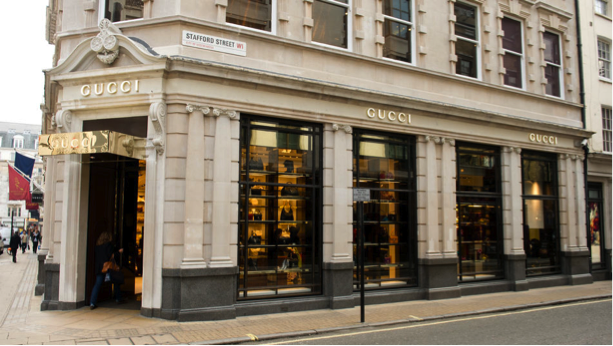

Reparacionet
¿Donde estamos?
Estamos ubicados sobre la calle Maza altura 754 entre las calles Mexico e Independencia.
Foto de la entrada 
Esta es la puerta de ingreso a la sucursla. Al ingresar, anunciarse con turno y DNI.
Pagina creada por Juan Ignacio Lopez.